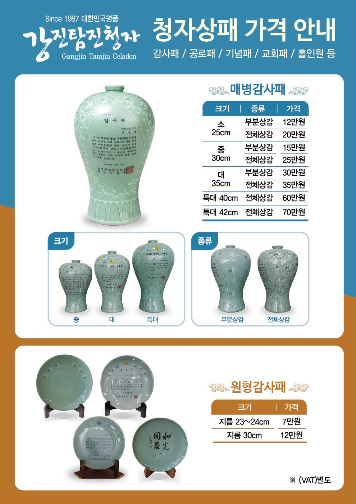

감사패 · 공로패 · 기념패 · 교회패 · 홀인원패 — 1987년부터 이어온 주문 제작, 문안 각인 포함
감사패 · 공로패 · 기념패 · 교회패 · 홀인원패 — 1987년 강진탐진청자 시절부터 이어온 주문 제작입니다. 문안을 보내주시면 상감 청자에 새겨 구워 드리며, 받침대와 함께 전해 드립니다.
| 매병 감사패 | 종류 | 가격 |
|---|---|---|
| 소 25cm | 부분상감 / 전체상감 | 12만원 / 20만원 |
| 중 30cm | 부분상감 / 전체상감 | 15만원 / 25만원 |
| 대 35cm | 부분상감 / 전체상감 | 30만원 / 35만원 |
| 특대 40cm | 전체상감 | 60만원 |
| 특대 42cm | 전체상감 | 70만원 |
| 원형 감사패 | 가격 | |
|---|---|---|
| 지름 23~24cm | 7만원 | |
| 지름 30cm | 12만원 |
부가세 별도 · 연잎형/직사각형/항아리형 등 다른 형태도 제작 가능 · 문안 각인 포함
